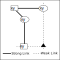
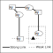
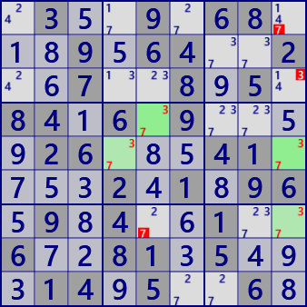

Remote Pair
RemotePairは bivalueセルを強いリンクでつなぐチェイン系の解析アルゴリズムです。
次図のように、bivalue（ここではxyとする）が強いリックで連結している連を作ります。図では、連のセルを2つのグループに分けて表示してあります。
このとき、偶数個の隔たりのあるセルペア（□とのセル）と同時に弱いリンクで接続するセル（▲）は、x、ｙのいずれでもあり得ません。
すなわち、bivalueセルの連はセル▲に対しLockedとなっています。


Remote Pairの例です。
 .3..9.68...9.64..2..7..8.5.84.6.9....26...41....2.1.96.9.4..1..6..81.5...14.5..6.
.3..9.68...9.64..2..7..8.5.84.6.9....26...41....2.1.96.9.4..1..6..81.5...14.5..6.2..8..1...8.4..6.3...2968...1..3.2.43.......69.5.8..3...1324...6.2..8.1...8..1..2
RemotePair解析プログラム
(0)波及的探索ルーティンの基本的な構造
（Multi)Coloringでも用いており、また以下のいくつかの解析アルゴリズムでも用いている波及的探索の基本的な構造を示します。
波及的探索ルーティンは、ここではQueueを用いています。
- Queueから着目ノードを取り出す。
- 着目ノードについて、探索結果の処理を行い、次回に処理するノードをQueueに保存する。
//探索ルーティンの基本的構造
メイン関数{
起点設定
if( SearchSpreading(起点) ) 解が求まった
}
bool SearchSpreading( 起点 ){
Queueを作る。
Queueに起点ノードをPush。
while( (Queueをpopして着目ノードとする)、着目ノードがある限り以下を繰返す。 ){
foreach(着目ノードにつながらリンクについて以下を繰返す ){
if( リンクの他端ノードは未処理 ){
探索結果の処理
Queueに他端ノードをPush。
}
}
}
return 探索結果;
}(1)連生成関数
波及的探索ルーティンの実装です。ここでは列挙型としています。 変則的な方法ですが、Bit81のID要素を使って着目した候補数字ペアの値を呼び出し元に通知しています[14]。
public partial class CellLinkGen: AnalyzerBaseV2{
private IEnumerable<Bit81[]> _RPColoring( ){
if( BVCellLst.Count<4 ) yield break;
Bit81 TBD = new Bit81();
BVCellLst.ForEach(p=>TBD.BPSet(p.rc));
int rc1;
while( (rc1=TBD.FindFirstrc())>=0 ){
Bit81[] CRL=new Bit81[2];
CRL[0]=new Bit81(); CRL[1]=new Bit81();
Queue<int> rcQue = new Queue<int>();
rcQue.Enqueue(rc1<<1);
CRL[0].BPSet(rc1);
int FreeB = pBDL[rc1].FreeB;
CRL[0].ID=FreeB;
while( rcQue.Count>0 ){
int rcX=rcQue.Dequeue();
int kx = 1-(rcX&1);
rc1 = rcX>>1;
TBD.BPReset(rc1);
Bit81 Chain = TBD&ConnectedCells[rc1];
foreach( var rc2 in Chain.IEGet_rc() ){
if( pBDL[rc2].FreeB==FreeB ){
if( !TBD.IsHit(rc2) ) continue;
rcQue.Enqueue( (rc2<<1)|kx );
CRL[kx].BPSet(rc2);
TBD.BPReset(rc2);
}
}
}
yield return CRL;
}
yield break;
}
}
(2)RemotePair
同じ値のbivalueセルの連生成が成功したら、2つのグループのセルと同時に関係するセルを探します。
次のことはどの解析アルゴリズムでも共通にいえることです。
やさしいアルゴリズムの順に適用すれば普通の結果が求まりますが、それらを省いて適用すると誤りではないものの不自然な結果が求まることがあります。
このRemotePairのコードでも、そのような挙動をすることがあります。
public partial class CellLinkGen: AnalyzerBaseV2{
public bool RemotePair( ){ //RemotePairs
if(BVCellLst==null) BVCellLst = pBDL.FindAll(p=>(p.FreeBC==2)); //BV:bivalue
foreach( Bit81[] CRL in _RPColoring( ) ){
int FreeB=CRL[0].ID;
bool RPfond=false;
foreach( var P in pBDL.Where(p=>(p.FreeB&FreeB)>0) ){
if( (CRL[0]&ConnectedCells[P.rc]).IsZero() ) continue;
if( (CRL[1]&ConnectedCells[P.rc]).IsZero() ) continue;
P.CancelB=P.FreeB&FreeB; RPfond=true;
}
if(RPfond){
SolCode = 2;
string SolMsg="Remote Pair #"+FreeB.ToBitStringN(9);
Result=SolMsg;
if( !SolInfoDsp ) return true;
ResultLong = SolMsg;
Color Cr = _ColorsLst[0];
Color Cr1 = Color.FromArgb(255,Cr.R,Cr.G,Cr.B);
Color Cr2 = Color.FromArgb(150,Cr.R,Cr.G,Cr.B);
foreach( var P in CRL[0].IEGet_rc().Select(p=>pBDL[p]) ) P.SetNoBBgColor(FreeB,AttCr,Cr1);
foreach( var P in CRL[1].IEGet_rc().Select(p=>pBDL[p]) ) P.SetNoBBgColor(FreeB,AttCr,Cr2);
if( !AnMan.SnapSaveGP(true) ) return true;
RPfond=false;
}
}
return false;
}
}